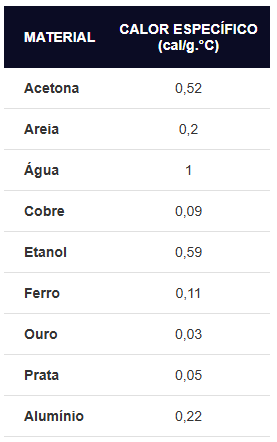

Calor Específico
O calor específico é a quantidade de calor necessária para elevar em 1 °C a temperatura de 1 grama de uma determinada substância. Essa grandeza física determina se um material aquece ou esfria com facilidade: quanto maior o valor, mais energia ele precisa receber ou perder para mudar de temperatura.
Diferença entre Calor Específico e Capacidade Térmica:
Calor específico (c): É uma propriedade intrínseca da substância (não depende do tamanho do objeto). Por exemplo, uma gota de água e um oceano têm o mesmo calor específico.
Capacidade térmica (C): É uma propriedade do corpo (depende da massa). É calculada por C = m ⋅ c. Uma piscina cheia de água tem uma capacidade térmica muito maior do que um copo de água.
Fórmula:
A relação entre a quantidade de calor e a variação de temperatura é descrita pela equação fundamental da calorimetria:
Q = m ⋅ c ⋅ ΔT
Onde:
Q: Quantidade de calor — medida em Calorias (cal) ou Joules (J).
m: Massa do corpo (g ou kg).
c: Calor específico da substância (indica o quão fácil ou difícil é mudar sua temperatura; o da água é 1,0 cal/gºC).
ΔT:Variação de temperatura (Tf - Ti)
Unidades de Medida:
Unidade usual: cal/goC (caloria por grama e por grau Celsius)
Unidade no SI: J/kg⋅K (Joule por quilograma e por Kelvin)
Valores de Referência:
A água possui um dos maiores calores específicos entre as substâncias comuns, o que significa que ela demora para esquentar e para esfriar, atuando como um excelente regulador térmico.
